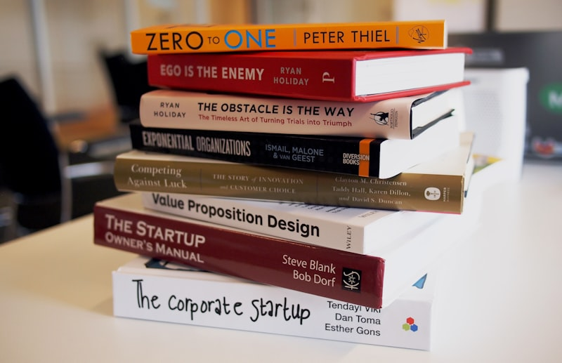
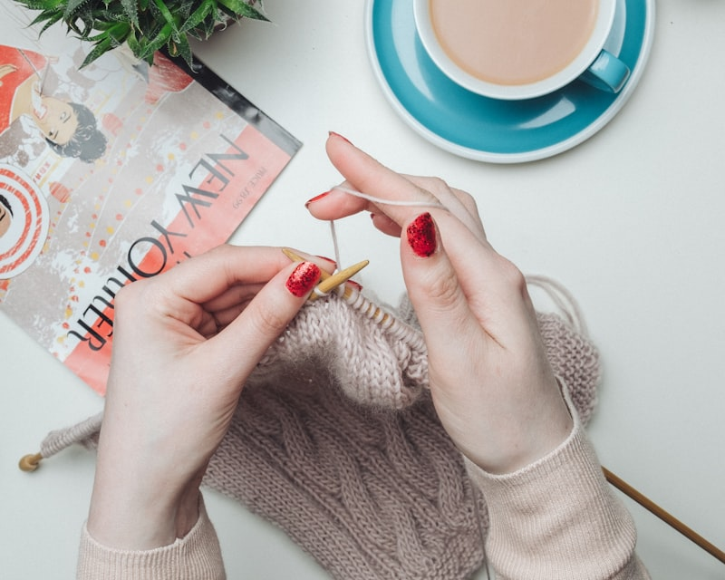

Weaving Densities: Bookbag Warp Calibration
How we analyze cotton canvas fiber counts and calculate loom shuttle speeds to weave durable, fluid study bookbags.
[ SCHOLARLY ARCHIVE // DISPATCHES ]
A structured collection of technical articles on organic cotton spinning, plant indigo dye chemistry, apron drop calculations, and heat-resistant insulation.
How we analyze cotton canvas fiber counts and calculate loom shuttle speeds to weave durable, fluid study bookbags.
Analyzing pH fermentation levels and oxygen reactions to build lasting, chemical-free indigo blue colors on book covers.
How plate alignment margins, tablecloth side drops, and fabric friction coefficients control student study postures.
Sourcing organic flax plants, retting harvests, and spinning long bast strands to maintain table cloth strength.
Analyzing double welt seams, edge thread densities, and pull thresholds on heavy woven linen tablecloth borders.

How we test textured linen weaves against heavy friction wheels to verify wash durability thresholds.
Understanding natural mordants, tea leaf tannin baths, and indigo sediment fermentations to fix colors without chemicals.
Measuring heat flow speeds, fiber loft thickness, and thermal values of table runner underlays under hot cast irons.

Why we analyze saddle stitching on gather seams and check double-fold miter corners to prevent corner unravels.

Understanding hot flat iron pressures, natural flax cell structures, and silicone finish limits to preserve smooth finishes.
Testing nitrogen color bonds, sunlight simulator testing hours, and color fade margins under high elevation sun rays.
How Belgian linen napkins fold flat inside travel wicker baskets, protecting borders without permanent crease damage.